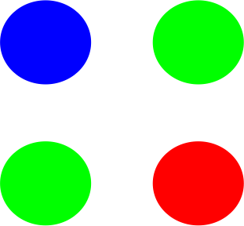
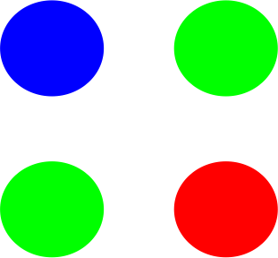
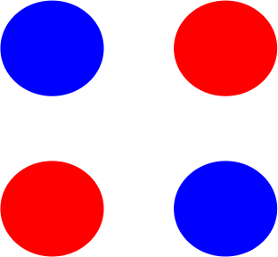
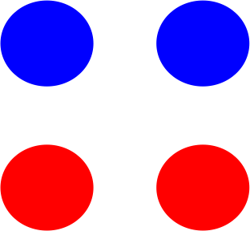
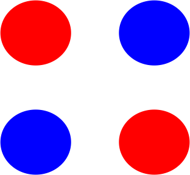
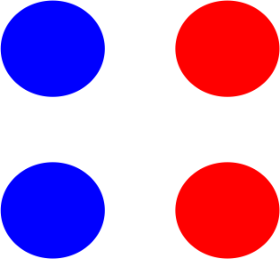
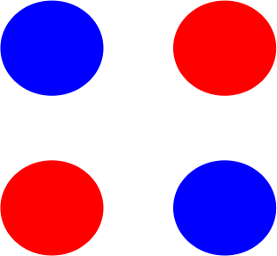
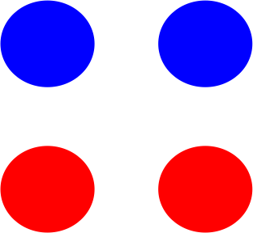
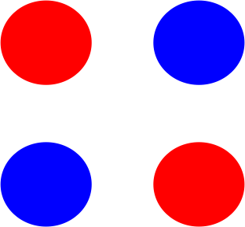
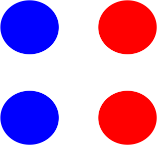

Dataset

 

 







Types de similarité
- 0 : MeanSimilarityTask - global metric
-
1 : GridMeanSimilarityTask (1,2) - 1 column, 2 lines grid representation
-
2 : GridMeanSimilarityTask (2,1) - 2 columns, 1 line grid representation
-
3 : GridMeanSimilarityTask (2,2) - 2 columns, 2 lines grid
representation